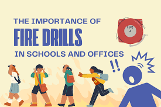

School Fire Drills
Description:
These drills are designed to help students, staff members respond appropriately in the event of a fire, and to make sure everyone knows how to evacuate the building safely and quickly. Preparing students and staff for an emergency situation is important, so they will know how to act quickly and calmly when it happens.

Im sure you didn't know that there were types of fire drills. Well the types of fire drills are:
During school fire drills, it is essential to remain calm and listen to your teachers' instructions. Familiarize yourself with the designated exit routes and ALWAYS use the stairs instead of elivators. Leave all personal belongings behind and evacuate quickly and quietly. Close doors behind you if it is safe to do so to help contain any potential fire.
Once outside, proceed directly to the designated assembly area and REMAIN THERE until your teacher accounts for everyone. DO NOT, and l repeat, DO NOT re-enter the building until you receive official permission, and report any missing individuals to staff immediatley. Regular participation in these drills is crucial for ensuring everyone’s safety in an actual emergency. Learn the STOP ,DROP and ROLL method incase your clothes catch on fire. Remeber to NEVER EVER run in the carridors. Following these rules helps ensure safety during an emergency.
The importance of fire drills in schools and offices
Fire drills are crucial in schools and offices as they prepare individuals for emergency situations. Practicing these drills ensures that everyone is familiar with evacuation routes and procedures, which can significantly reduce panic and confusion during an actual fire. Regular drills help to instill a sense of safety and responsibility among students and employees, reinforcing the importance of being aware of their surroundings and acting swiftly when required.
Moreover, fire drills serve to identify potential weaknesses in emergency plans. By simulating real-life scenarios, organizations can assess the effectiveness of their evacuation strategies, making necessary adjustments to improve safety protocols. This proactive approach not only enhances overall preparedness but also fosters a culture of safety, where individuals feel empowered to take action and protect themselves and others in the event of an emergency.